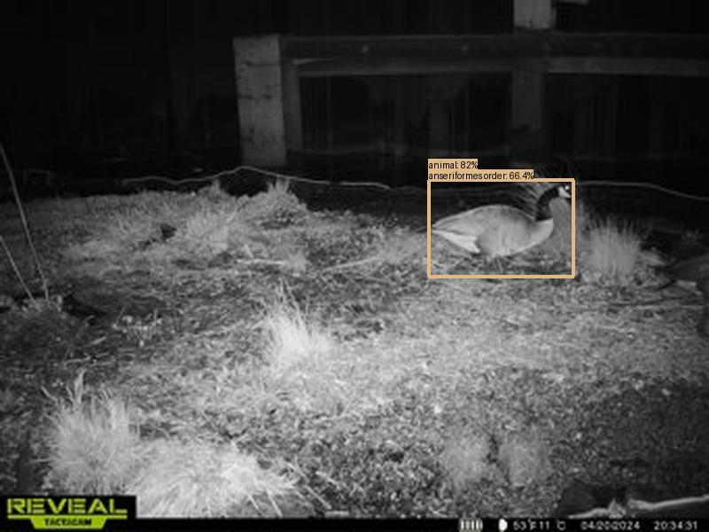
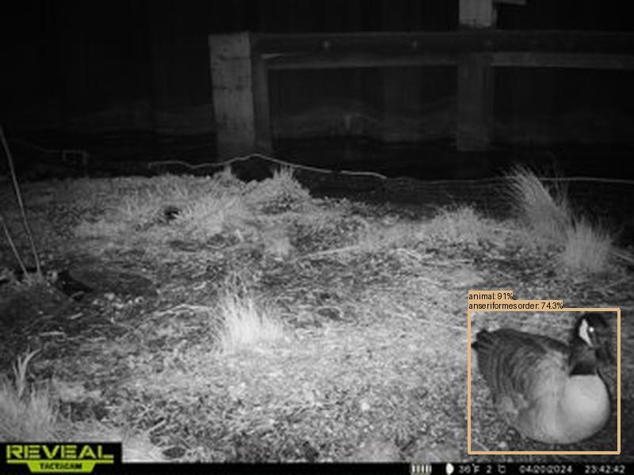
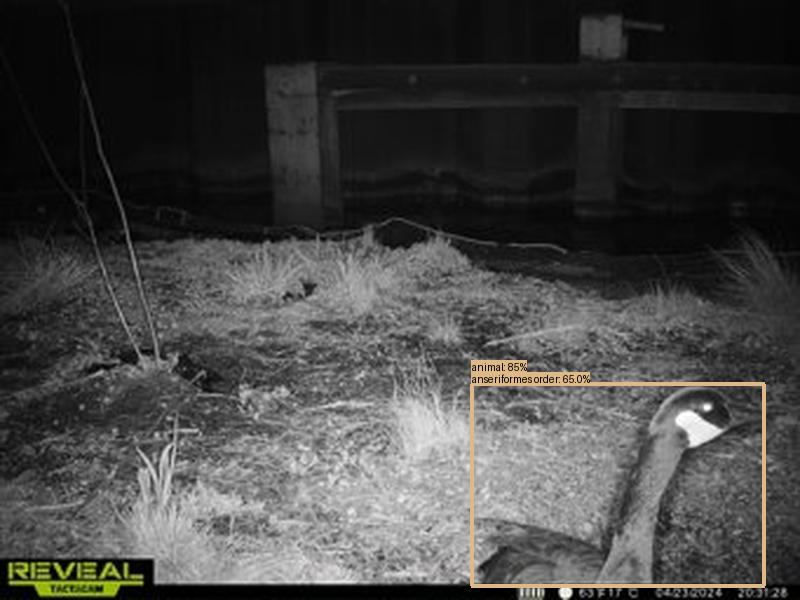
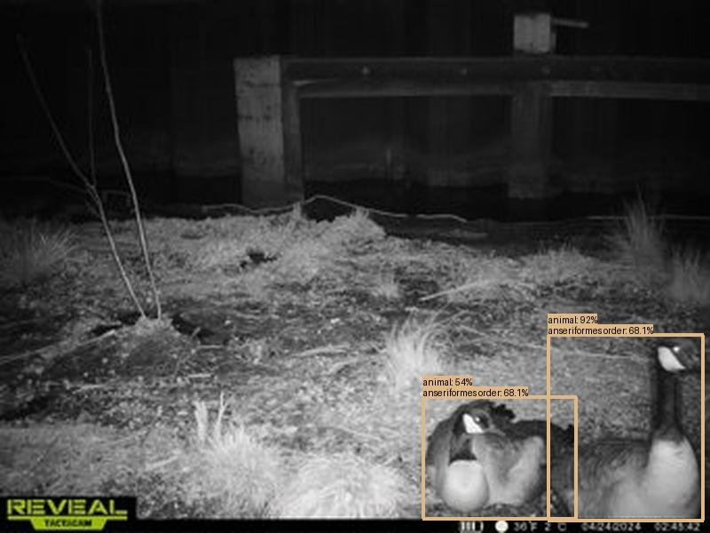
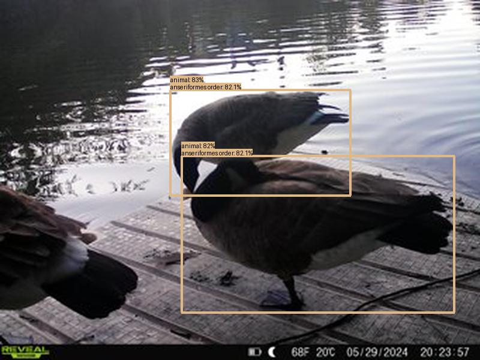

Result type: detections_animal, image: images/batch_3/2024-05-12_Prologis--SYEW5813.JPG, max conf: 0.821
Result type: detections_animal, image: images/batch_3/2024-05-12_Prologis--SYEW6033.JPG, max conf: 0.915
Result type: detections_animal, image: images/batch_4/2024-05-12_Prologis--SYEW7889.JPG, max conf: 0.848
Result type: detections_animal, image: images/batch_4/2024-05-12_Prologis--SYEW8287.JPG, max conf: 0.916
Result type: detections_animal, image: images/batch_7/2024-06-03_UR011--SYFW1469.JPG, max conf: 0.832
Result type: detections_animal, image: images/batch_7/2024-06-03_UR011--SYFW2234.JPG, max conf: 0.951